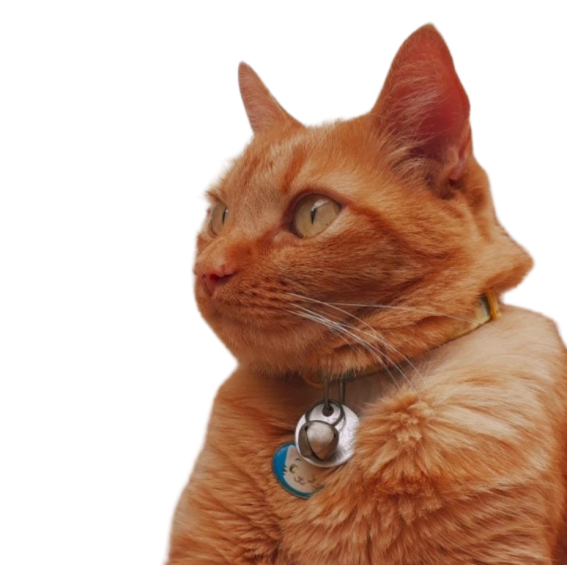
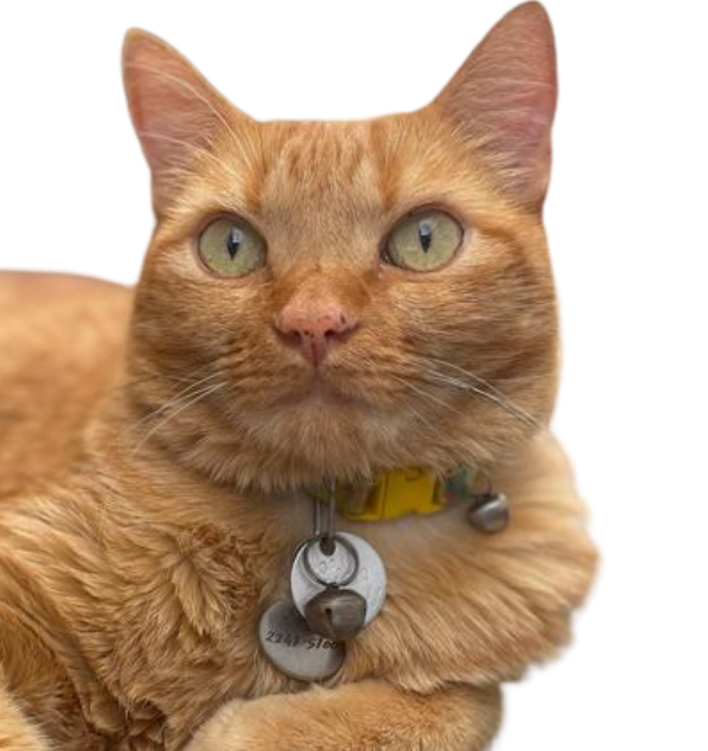

Oi, eu sou o
Rony

Quem sou eu?

Me chamo Rony, conhecido como Gato Ronaldo, Zé Ruela. Tenho 9 anos e todas as vacinas em dia.
Eu sou bastante assustado, mas adoro pestisquinho. Então se quiser se aproximar de mim aposte em um Dreamies ou aqueles saches.
Não sou agressivo, mas não gosto de muito toque, não fique com medo se eu der aquela leve mordidinha para mostrar que não estou gostando de algo.
Ah! Ultima coisa, barriga e patinhas estão fora da área de carinho, mas na orelha e cangote são bem vindos!